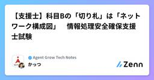

Agent Grow Tech Notesのフィード
https://zenn.dev/p/agent_grow
Agent Grow エンジニアによるテックブログです！
フィード
【ハマり散らかした】Teamsでゲストアクセスできない！？
Agent Grow Tech Notesのフィード
結論Entra IDで双方のB2Bコラボレーション設定を許可しているにもかかわらずTeamsゲストアクセスができない場合、Teams管理センターで「外部アクセス」を相手ドメイン指定で一時的に解放（設定保存）してみる価値があります。仕様上、外部アクセスとゲストアクセスは別機能ですが、設定変更を入れることでシステム内部の同期タイムラグ（キャッシュ）が強制更新され、解消するケースがあるかもしれません。 1. トラブル発生：相互許可したはずなのにアクセス不能自社アカウントから相手先テナントへのTeamsゲストアクセスを試みた際、接続エラーが発生しました。初期設定（Entra管理...
1日前

【応用情報】R7春 午後（問１１：システム監査）その３：設問２
Agent Grow Tech Notesのフィード
はじめに令和７年度春期 応用情報技術者試験（午後：問１１ システム監査） について解説します。今回は続編です。前回までの記事をまだ読んでいない場合は、下記のリンクへどうぞ。その１：全体像の把握その２：設問１!この記事では問題文と設問は一部のみ掲載します。下記リンクの過去問PDFを参照しながら、お読みいただくことを推奨いたします。※出典：令和７年度 春期 応用情報技術者試験 午後 問題冊子では、設問を解いていきます。前回に述べた通り、設問はすべて最後の段落の穴埋め問題になっています。 設問２設問２段落と項目が指定されており、確認しやすいです。...
2日前
Azure FirewallとSquid/PACとのワイルドカード評価仕様の違い
Agent Grow Tech Notesのフィード
Azure Firewallで *.chatgpt.com を許可したのに接続拒否？Squid/PACとのワイルドカード評価仕様の違いと解決策 結論Azure Firewall の Application Rule では *.chatgpt.com と定義しても、ルートドメイン（Apexドメイン） chatgpt.com にはマッチしない。Squid や PAC ファイルなどのプロキシ製品は .chatgpt.com や *.chatgpt.com でルートドメインも良しなに含めるが、Azure FW は標準的なワイルドカード評価を行う。解決策: Azure FW の ...
5日前

【支援士】科目Bの「切り札」は「ネットワーク構成図」 情報処理安全確保支援士試験
Agent Grow Tech Notesのフィード
はじめにこの記事では、情報処理安全確保支援士試験を受験される方に向けて情報発信します。!2026年7月に執筆しています。情報処理安全確保支援士試験は、2027年度に大幅に刷新される予定です。知識としては刷新後でも有効と考えられますが、あくまでも刷新前を対象としている旨をご理解ください。 対象者特に下記のいずれかに該当する方々に読んでいただくと、よりお役に立てると考えています。ネットワーク構成図から問題点を読み取るのが苦手英文字やカタカナの専門用語が多くて混乱する試験直前の仕上げをしたいいざというときの「切り札」として覚えておきたい（最もオススメです...
6日前

【応用情報】R7春 午後（問１１：システム監査）その２：設問１
Agent Grow Tech Notesのフィード
はじめに令和７年度春期 応用情報技術者試験（午後：問１１ システム監査） について解説します。今回は続編です。前回の記事をまだ読んでいない場合は、下記のリンクへどうぞ。その１：全体像の把握!この記事では問題文と設問は一部のみ掲載します。下記リンクの過去問PDFを参照しながら、お読みいただくことを推奨いたします。※出典：令和７年度 春期 応用情報技術者試験 午後 問題冊子では、設問を解いていきます。前回に述べた通り、設問はすべて最後の段落の穴埋め問題になっています。 設問１設問１勤務管理システムの仕様を確認します。標準勤務時間の登録についてもし問...
9日前
【オススメ】ITエンジニア初心者が「マネジメント」を最初に学ぶなら、このシリーズ！
Agent Grow Tech Notesのフィード
今回はオススメの書籍を紹介します。ちなみに、私は読書があまり好きではありません。そんな私がオススメするのですから、相当気に入ったのだと思います（笑）!この記事は宣伝やアフィリエイト目的ではなく、個人の感想を述べる内容になっています。 対象者本当は「すべてのビジネスマンにオススメ！」と言いたいところですが、今回は「特に効果がありそうな方」に絞ります。ITエンジニアになったばかりの方これからマネジメントを目指す方マネジメントになったけど不安な方 学べることビジネスを支えるITエンジニアと切っても切れないマネジメントの「考え方」「全体像」をイメージしやすく、基礎...
13日前
【応用情報】R7春 午後（問１１：システム監査）その１：全体像の把握
Agent Grow Tech Notesのフィード
はじめに今回は令和７年度春期 応用情報技術者試験（午後：問１１ システム監査） について解説します。解説は長文となるため、複数回に分けております。初回である今回は、まず全体像を解説します。問題文の全体を引用しますが、下記リンクの過去問PDFを事前にお読みいただくことを推奨いたします。※出典：令和７年度 春期 応用情報技術者試験 午後 問題冊子 問題文の全体像まず [〇〇〇〇] のようにカッコで括られている見出しを目印にして、ストーリーを把握します。見出しだけを並べてみます。冒頭（見出しなし）：概要説明勤務管理の概要勤務管理に関連するシステムの概要勤務管理...
16日前
【試験対策】応用情報 | 支援士 | 高度試験 （時間配分 ＆ 問題文の読み方）刷新前ラストの試験！
Agent Grow Tech Notesのフィード
はじめに今回は、令和８年度を最後に刷新される応用情報・高度試験・支援士試験の対策について述べたいと思います。 対象の試験この記事では、下記の試験についてご紹介します。応用情報（科目B）支援士（科目B）高度試験（科目B-1）高度試験（科目B-2）※ネットワーク、データベースのみ 対象でない試験科目Aと高度試験（科目B-2）の論文 は対象外です。 内容下記の２つをご紹介します。１つめ：時間配分２つめ：問題文の読み進め方 オススメの対象者このようなお悩みを持っている方に、特にオススメです！問題文が長くて、設問もわけが分からなくて迷子に...
20日前
【SQL】ウィンドウ関数を簡単に試すサンプルコード ※多くのRDBで実行可能
Agent Grow Tech Notesのフィード
今回は、多くのウィンドウ関数を詰め込んだSQLのサンプルコードをご紹介します。改めて後述しますが標準SQLを意識して作成したので、さまざまなRDB製品でお試しいただけます。 ウィンドウ関数SQLの構文では比較的新しいウィンドウ関数は、データサイエンスやDX推進の影響で使う機会が増えていることと思います。私も実務では非常に使う機会が増えました。データ分析や抽出（BIやEXCELへの出力）ストアドプロシージャへの実装（PLpgSQL）アプリケーションへの実装（C#） 作った理由だいぶ使い慣れてきたものの、たまに「この場合は何を使うんだっけ？」と作業中に調べることもあ...
23日前
【SQL講座②】データマネジメント試験（仮称）のサンプル問題で学ぶ「外部結合」と「COALESCE関数」
Agent Grow Tech Notesのフィード
はじめに2026/6/22に、IPAより新制度試験のうちデータマネジメント試験のサンプル問題が公開されました。※出典：データマネジメント試験（仮称）科目B サンプル問題 記事の概要今回は、問題文の登場人物になったつもりで、データ分析用のレポートを作成する過程を再現してみます。!問題文から判断ができない部分は個人的な判断が含まれますので、あらかじめご容赦ください。長文となるため、記事は２回に分けております。今回は２回目ですので、もし前回の記事をまだ読んでいない場合は、こちらからどうぞ。今回記事作成するもの内容（問題文より抜粋）ー【SQL講...
1ヶ月前
【SQL】履歴管理されているマスタの重複トラブルを回避する 第４回 ※PostgreSQL対応
Agent Grow Tech Notesのフィード
今回は、私が実際に遭遇したトラブルを元にSQLを用いて回避する方法を紹介します。テーマはタイトルの通り、マスタテーブルを用いる要件ですが『履歴管理されている』という点がポイントです。簡単な事例を用いて、実務をイメージできるように進めます。よろしければ、後述するサンプルを実際に動かしながら学んでみてください。 記事について!長文となるため、記事を分けてご紹介しております。今回は第４回ですので、まだ前回までの記事を読んでいない場合は下記リンクよりお読みください。第１回はこちらをクリック！第２回はこちらをクリック！第３回はこちらをクリック！ 回避する方法（UPDAT...
1ヶ月前
【SQL講座①】データマネジメント試験（仮称）のサンプル問題で学ぶ「内部結合」と「REPLACE関数」
Agent Grow Tech Notesのフィード
はじめに2026/6/22に、IPAより新制度試験のうちデータマネジメント試験のサンプル問題が公開されました。※出典：データマネジメント試験（仮称）科目B サンプル問題 記事の概要今回は、問題文の登場人物になったつもりで、データ分析用のレポートを作成する過程を再現してみます。!問題文から判断ができない部分は個人的な判断が含まれますので、あらかじめご容赦ください。長文となるため、記事は２回に分けております。今回記事作成するもの内容（問題文より抜粋）〇【SQL講座①】調査結果具体的なデータ形式の確認のために，EC サイト顧客データと店舗...
1ヶ月前
Azure Virtual Desktop (AVD) セッションホスト更新失敗時の再実行について
Agent Grow Tech Notesのフィード
Azure Virtual Desktop (AVD) セッションホスト更新失敗時の再実行手順Azure Virtual Desktop（AVD）のマスターイメージ更新運用において、遭遇する「セッションホストの更新失敗」。個人的な打率は5割強くらいです。半分成功して、半分失敗するといった感じ。まだプレビューだから仕方ないかと諦めています。。この記事では、失敗したセッションホストの更新を再実行する通常の手順と、Azureポータルの不具合でボタンがグレーアウトしてしまった際のAzure Cloud Shell（PowerShell / REST API）を使った強制キャンセル＆復...
1ヶ月前
【SQL】履歴管理されているマスタの重複トラブルを回避する 第３回 ※PostgreSQL対応
Agent Grow Tech Notesのフィード
今回は、私が実際に遭遇したトラブルを元にSQLを用いて回避する方法を紹介します。テーマはタイトルの通り、マスタテーブルを用いる要件ですが『履歴管理されている』という点がポイントです。簡単な事例を用いて、実務をイメージできるように進めます。よろしければ、後述するサンプルを実際に動かしながら学んでみてください。 記事について!長文となるため、記事を分けてご紹介しております。今回は第３回ですので、まだ前回までの記事を読んでいない場合は下記リンクよりお読みください。第１回はこちらをクリック！第２回はこちらをクリック！今回はトラブルを回避する方法について説明します。 お...
1ヶ月前
【解いてみた】データマネジメント試験（仮称）科目B サンプル問題：問２（データプロファイリング）
Agent Grow Tech Notesのフィード
はじめに2026/6/22に、IPAより新制度試験のうちデータマネジメント試験のサンプル問題が公開されました。※出典：データマネジメント試験（仮称）科目B サンプル問題今回は、受験を予定している身として解いてみました。!個人的な意見が含まれますので、解答テクニックの一例としてお読みいただけると幸いです。 科目Bのサンプル問題：問２科目Bのサンプル問題は２問あります。今回は問２に挑戦します。IPAの出題趣旨を引用します。データカタログの情報と実データの調査結果を適切に解釈し，表面的な技術課題と，より本質的なガバナンス上の課題を切り分ける能力，そして，その状況...
1ヶ月前
【SQL】履歴管理されているマスタの重複トラブルを回避する 第２回 ※PostgreSQL対応
Agent Grow Tech Notesのフィード
今回は、私が実際に遭遇したトラブルを元にSQLを用いて回避する方法を紹介します。テーマはタイトルの通り、マスタテーブルを用いる要件ですが『履歴管理されている』という点がポイントです。簡単な事例を用いて、実務をイメージできるように進めます。よろしければ、後述するサンプルを実際に動かしながら学んでみてください。 記事について!長文となるため、記事を分けてご紹介しております（３～４回の予定）今回は第２回ですので、まだ前回を読んでいない場合は下記リンクよりお読みください。第１回はこちらをクリック！今回はこの仕様特有のトラブルについて説明します。 おさらい（正常稼働）正...
1ヶ月前
【解いてみた】データマネジメント試験（仮称）科目B サンプル問題：問１（データ取扱いの責任）
Agent Grow Tech Notesのフィード
はじめに2026/6/22に、IPAより新制度試験のうちデータマネジメント試験のサンプル問題が公開されました。※出典：データマネジメント試験（仮称）科目B サンプル問題今回は、受験を予定している身として解いてみました。!個人的な意見が含まれますので、解答テクニックの一例としてお読みいただけると幸いです。 科目Bのサンプル問題：問１科目Bのサンプル問題は２問あります。今回は問１に挑戦します。IPAの出題趣旨を引用します。データ品質の問題を発見した際の一連のプロセス（報告，暫定対応，恒久対策，メタデータ管理）において，組織のデータマネジメントルールに基づき，各...
2ヶ月前
【SQL】履歴管理されているマスタの重複トラブルを回避する 第１回 ※PostgreSQL対応
Agent Grow Tech Notesのフィード
今回は、私が実際に遭遇したトラブルを元にSQLを用いて回避する方法を紹介します。テーマはタイトルの通り、マスタテーブルを用いる要件ですが『履歴管理されている』という点がポイントです。簡単な事例を用いて、実務をイメージできるように進めます。よろしければ、後述するサンプルを実際に動かしながら学んでみてください。 記事について!長文となるため、記事を分けてご紹介します（３～４回の予定）今回は初回です。 事例の説明今回は、小売業がテーマです。商品が売れた情報をトランザクションテーブルに保存し、その商品の情報をマスタテーブルから取得し、レポートを出力するものとします。...
2ヶ月前
【解いてみた】データマネジメント試験（仮称）科目A サンプル問題
Agent Grow Tech Notesのフィード
はじめに2026/6/22に、IPAより新制度試験のうちデータマネジメント試験のサンプル問題が公開されました。※出典：データマネジメント試験（仮称）科目A サンプル問題今回は、受験を予定している身として解いてみました。!個人的な意見が含まれますので、解答テクニックの一例としてお読みいただけると幸いです。 科目Aのサンプル問題科目Aは、基本情報技術者試験や情報セキュリティマネジメント試験と同様に短文の選択問題です。公開されたサンプルは３問です。個人的な判断ですが、概要はこのような感じかと思います。問１：データガバナンスの確保問２：データ品質の維持問３：メ...
2ヶ月前
【応用情報】R7秋 午後（問１１：システム監査）その５：設問５
Agent Grow Tech Notesのフィード
はじめに令和７年度秋期 応用情報技術者試験（午後：問１１ システム監査） について解説します。今回は続編です。前回までの記事をまだ読んでいない場合は、下記のリンクへどうぞ。その１：全体像の把握その２：設問１～２その３：設問３その４：設問４!この記事では問題文と設問は一部のみ掲載します。下記リンクの過去問PDFを参照しながら、お読みいただくことを推奨いたします。※出典：令和７年度 秋期 応用情報技術者試験 午後 問題冊子では、設問を解いていきます。前回述べた通り、設問はすべて最後の段落の穴埋め問題になっています。 設問５空欄が２つあります。設...
2ヶ月前